Here you will meet our team and get a chance to know us

Ut fermentum lectus ante, ac scelerisque tellus commodo vel. Praesent ac augue at tellus semper sodales sit amet non dui. Aenean pharetra, magna porta mattis volutpat, nunc urna ornare enim, cursus laoreet est odio a nulla. In eu vehicula massa, at efficitur orci. Maecenas tristique rutrum orci. Aliquam nunc elit, vehicula ac lectus ac, tempus porttitor ipsum. Nullam molestie gravida erat, vitae tristique sapien auctor nec. Aenean congue metus nec mi tempor tristique. Praesent pharetra lorem justo, posuere facilisis est malesuada eget. Mauris vel eleifend est. Pellentesque habitant morbi tristique senectus et netus et malesuada fames ac turpis egestas. Maecenas non ante lectus. Etiam nec velit aliquam, pretium leo nec, ullamcorper urna. Pellentesque eleifend neque ut nulla feugiat, eget laoreet ex fringilla. Integer vehicula dictum quam, vel blandit enim lacinia a. Aenean nulla quam, tincidunt at pretium ornare, aliquam et odio. Cras at maximus orci. In sit amet neque fringilla, ultricies dui ut, pretium nisi. Integer gravida sapien nisi. Ut sed imperdiet eros. Curabitur a finibus arcu. Sed laoreet posuere nunc vitae porta. Praesent pulvinar libero ut erat iaculis, a bibendum quam bibendum. Cras eget lacus id augue fermentum sodales at ac dui. Nullam at gravida dolor, molestie pellentesque lacus. Quisque blandit neque nunc, eget auctor sem dignissim ullamcorper. Duis eu felis lorem. Nam iaculis sed justo non vehicula.

Ut fermentum lectus ante, ac scelerisque tellus commodo vel. Praesent ac augue at tellus semper sodales sit amet non dui. Aenean pharetra, magna porta mattis volutpat, nunc urna ornare enim, cursus laoreet est odio a nulla. In eu vehicula massa, at efficitur orci. Maecenas tristique rutrum orci. Aliquam nunc elit, vehicula ac lectus ac, tempus porttitor ipsum. Nullam molestie gravida erat, vitae tristique sapien auctor nec. Aenean congue metus nec mi tempor tristique. Praesent pharetra lorem justo, posuere facilisis est malesuada eget. Mauris vel eleifend est. Pellentesque habitant morbi tristique senectus et netus et malesuada fames ac turpis egestas. Maecenas non ante lectus. Etiam nec velit aliquam, pretium leo nec, ullamcorper urna. Pellentesque eleifend neque ut nulla feugiat, eget laoreet ex fringilla. Integer vehicula dictum quam, vel blandit enim lacinia a. Aenean nulla quam, tincidunt at pretium ornare, aliquam et odio. Cras at maximus orci. In sit amet neque fringilla, ultricies dui ut, pretium nisi. Integer gravida sapien nisi. Ut sed imperdiet eros. Curabitur a finibus arcu. Sed laoreet posuere nunc vitae porta. Praesent pulvinar libero ut erat iaculis, a bibendum quam bibendum. Cras eget lacus id augue fermentum sodales at ac dui. Nullam at gravida dolor, molestie pellentesque lacus. Quisque blandit neque nunc, eget auctor sem dignissim ullamcorper. Duis eu felis lorem. Nam iaculis sed justo non vehicula.

Ut fermentum lectus ante, ac scelerisque tellus commodo vel. Praesent ac augue at tellus semper sodales sit amet non dui. Aenean pharetra, magna porta mattis volutpat, nunc urna ornare enim, cursus laoreet est odio a nulla. In eu vehicula massa, at efficitur orci. Maecenas tristique rutrum orci. Aliquam nunc elit, vehicula ac lectus ac, tempus porttitor ipsum. Nullam molestie gravida erat, vitae tristique sapien auctor nec. Aenean congue metus nec mi tempor tristique. Praesent pharetra lorem justo, posuere facilisis est malesuada eget. Mauris vel eleifend est. Pellentesque habitant morbi tristique senectus et netus et malesuada fames ac turpis egestas. Maecenas non ante lectus. Etiam nec velit aliquam, pretium leo nec, ullamcorper urna. Pellentesque eleifend neque ut nulla feugiat, eget laoreet ex fringilla. Integer vehicula dictum quam, vel blandit enim lacinia a. Aenean nulla quam, tincidunt at pretium ornare, aliquam et odio. Cras at maximus orci. In sit amet neque fringilla, ultricies dui ut, pretium nisi. Integer gravida sapien nisi. Ut sed imperdiet eros. Curabitur a finibus arcu. Sed laoreet posuere nunc vitae porta. Praesent pulvinar libero ut erat iaculis, a bibendum quam bibendum. Cras eget lacus id augue fermentum sodales at ac dui. Nullam at gravida dolor, molestie pellentesque lacus. Quisque blandit neque nunc, eget auctor sem dignissim ullamcorper. Duis eu felis lorem. Nam iaculis sed justo non vehicula.

Ut fermentum lectus ante, ac scelerisque tellus commodo vel. Praesent ac augue at tellus semper sodales sit amet non dui. Aenean pharetra, magna porta mattis volutpat, nunc urna ornare enim, cursus laoreet est odio a nulla. In eu vehicula massa, at efficitur orci. Maecenas tristique rutrum orci. Aliquam nunc elit, vehicula ac lectus ac, tempus porttitor ipsum. Nullam molestie gravida erat, vitae tristique sapien auctor nec. Aenean congue metus nec mi tempor tristique. Praesent pharetra lorem justo, posuere facilisis est malesuada eget. Mauris vel eleifend est. Pellentesque habitant morbi tristique senectus et netus et malesuada fames ac turpis egestas. Maecenas non ante lectus. Etiam nec velit aliquam, pretium leo nec, ullamcorper urna. Pellentesque eleifend neque ut nulla feugiat, eget laoreet ex fringilla. Integer vehicula dictum quam, vel blandit enim lacinia a. Aenean nulla quam, tincidunt at pretium ornare, aliquam et odio. Cras at maximus orci. In sit amet neque fringilla, ultricies dui ut, pretium nisi. Integer gravida sapien nisi. Ut sed imperdiet eros. Curabitur a finibus arcu. Sed laoreet posuere nunc vitae porta. Praesent pulvinar libero ut erat iaculis, a bibendum quam bibendum. Cras eget lacus id augue fermentum sodales at ac dui. Nullam at gravida dolor, molestie pellentesque lacus. Quisque blandit neque nunc, eget auctor sem dignissim ullamcorper. Duis eu felis lorem. Nam iaculis sed justo non vehicula.

I have recently discharged from the military after 6 years and am interested in pursuing a career in information technology. I enjoy fitness and challenging myself to try new things. In my spare time I watch anime, play golf, play online games, if I’m not doing either of those id likely be with friends or taking a mean nap. Currently I have very minimal background experience in IT, This website being the first group project I have been a part of and the second website I have been involved in putting together on github. I’m interested in blockchain development and I have recently learned I am also quite interested in the cyber security space.
Team Profile
Test results summary and how they can be helpful.
How the test results can be helpful
Using the results from the test each person in the group gives us an opportunity to better understand the characteristics and traits of other group members in a way that would be hard through conventional dialog. Using the results of the tests will help each team member get an idea of how the group may structure itself.
Individual Test results summary
Kolby
Kolby is an agreeable person who thinks rationally and logically, he is easy to get along with, not letting emotions control him. Kolby can be ruthless in his level of rationality and avoids emotional decision making. Kolby is a tactical hands-on learner.
 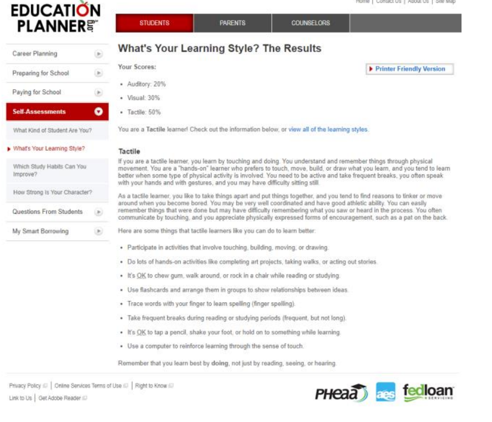
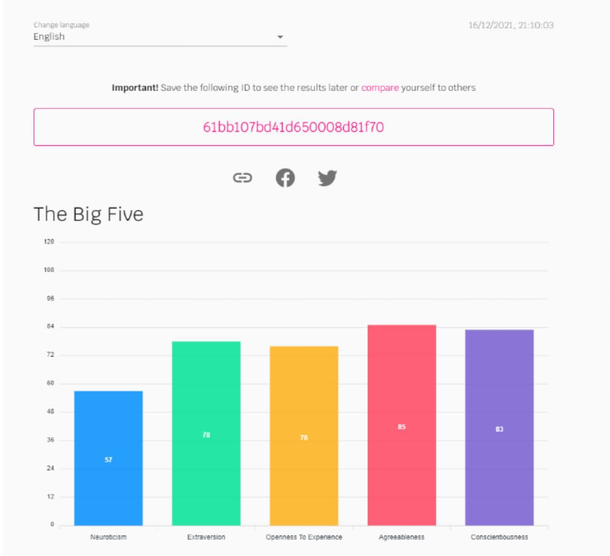
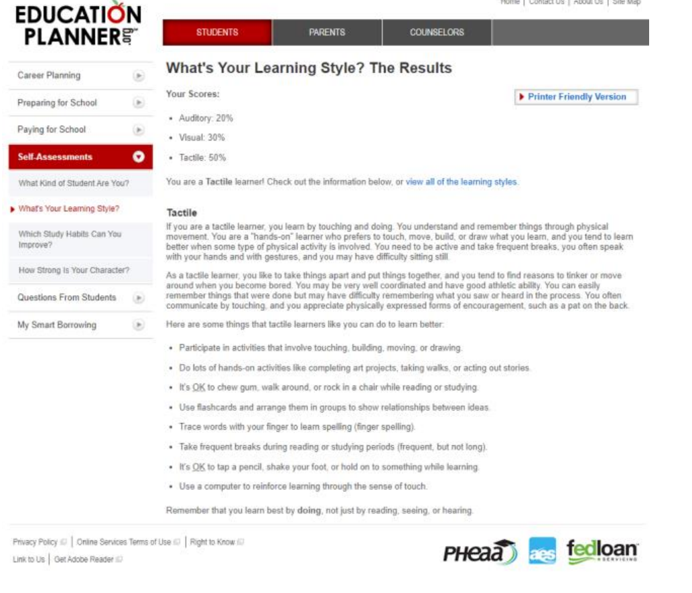
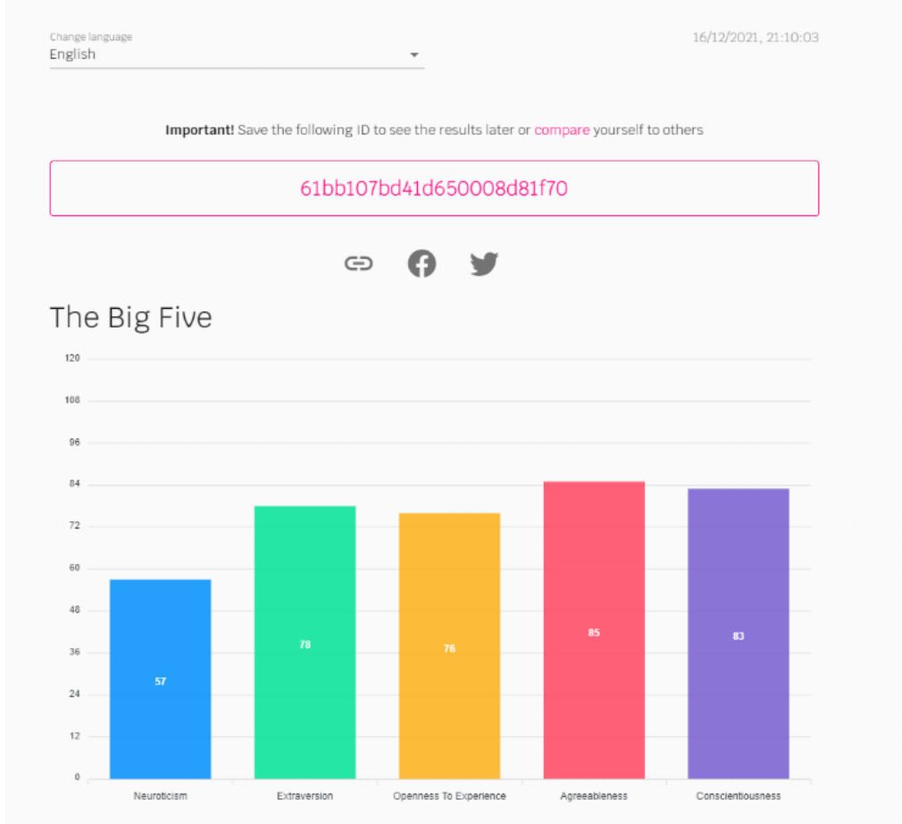
Jess
Jess is creative, empathetic with a perfectionist nature. Jess tends to avoid conflict and tries to keep everyone united like a moderator. Jess has high levels of agreeableness and extraversion. Jess is a visual learner.
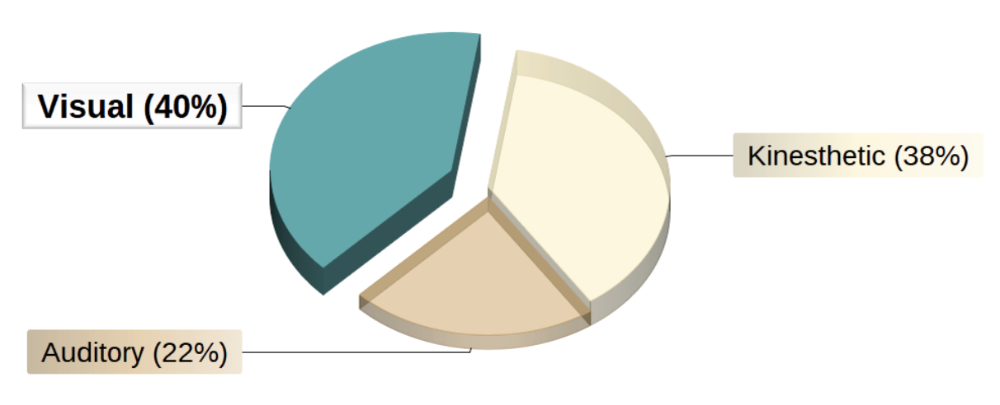
 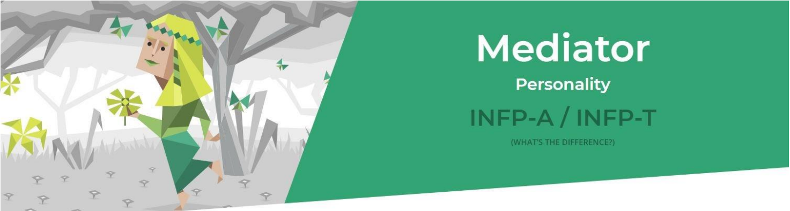
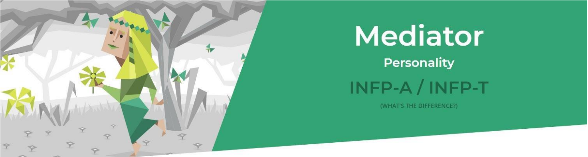
Jarrod
Jarrod has an introverted and observant personality. Jarrod is private and reserved. Jarrod tends to be more logical in the way he thinks and excels when it comes to the more practical, hands-on aspects of things, but struggles with moments that require a more abstract, creative, or imaginative way of thinking. Jarrod is a visual learner.
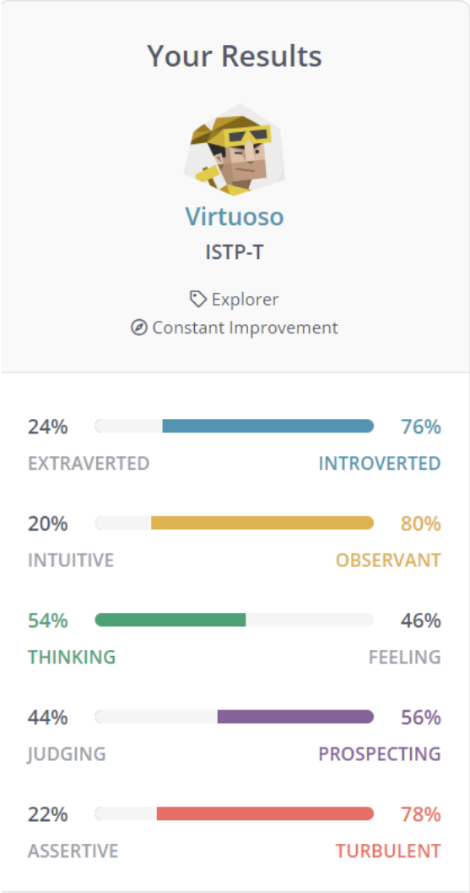
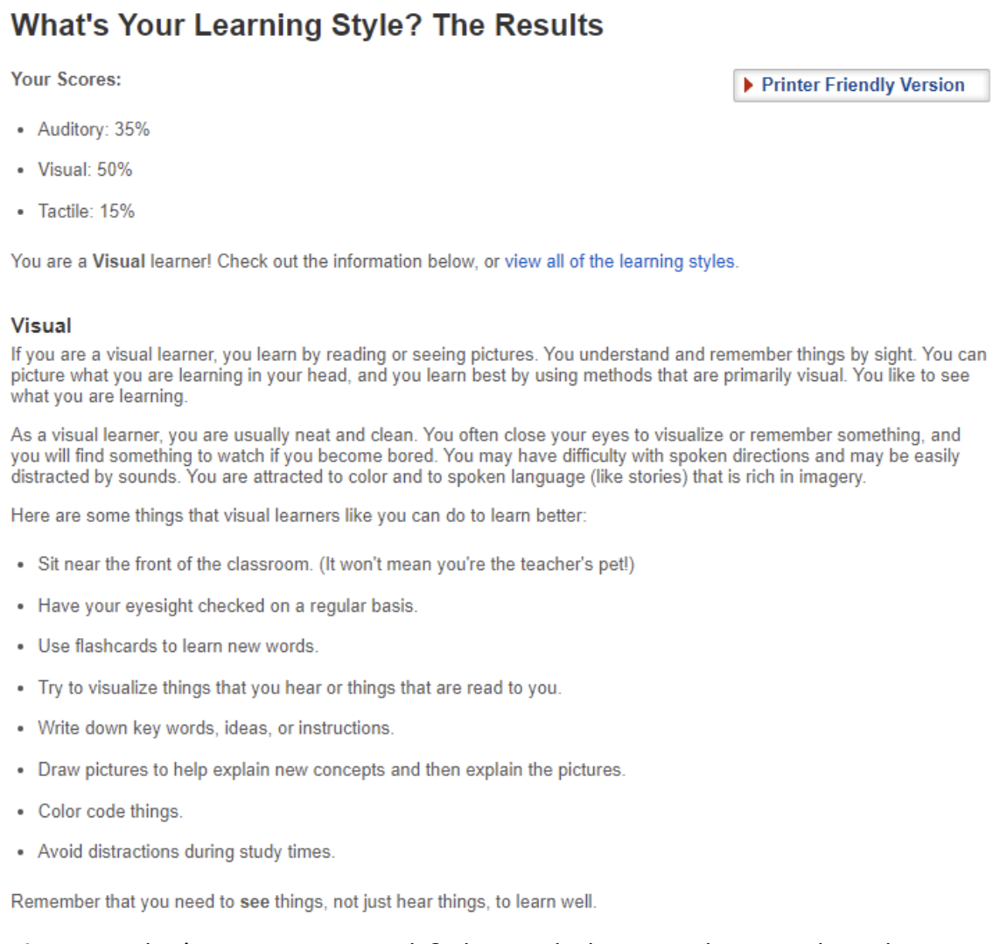

Derek
Derek is very logical and does not let emotions get in the way. Derek is an auditory and visual learner but is also a hands-on learner.


Cameron
Cameron shows rationalism, spirited curiosity, creative thinking and can be friendly but also private. Cameron is a hands-on tactical learner.
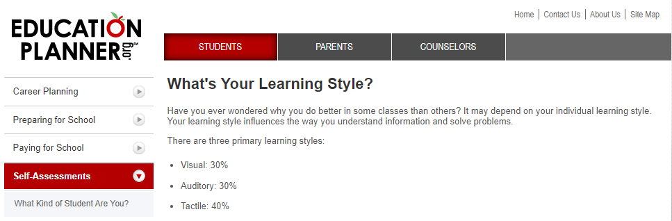
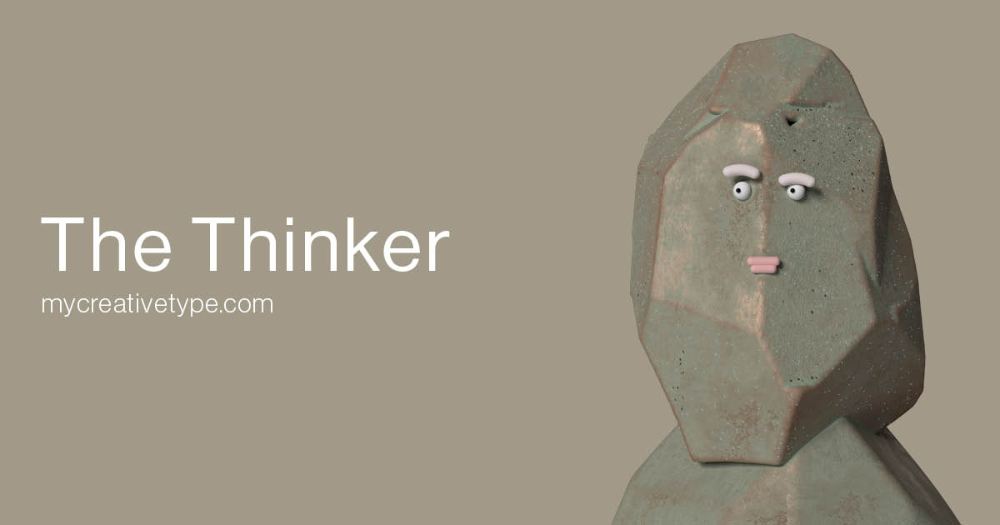
What the team might lack
Using the information from everyone's results we can get a good look at how the group may form and what strengths and weaknesses it will have. The results of the tests clearly show a lack of creativity. A lack of creativity in the group might result in less ideas that lack content. Most of the group members are logical thinkers that do not consider emotions. Not considering emotions especially of others when making decisions can easily cause conflict within a group. Looking at the results from everyone’s learning style tests show the group lacks in the auditory learning style. Because the group is made up of mostly hands on tactical learners and visual learners it might limit the groups’ ability to conduct research in the form of auditory learning.
Possible Strengths
It is clear the main strength of the team is its logical and rational thinking. Being logical and rational allows for ease of problem solving and reasonable solutions to difficult problems. The group has many hands-on learners. Having lots of hands-on learners means the group should have no trouble getting through the practical parts of assignments. The group is made up of friendly and agreeable people making it easy for everyone to get along.
Summary
The group will work well together because everyone seems to be similar and yet diverse in multiple ways giving the team a good mix of both common ground and unique abilities. The team has some weaknesses but with our knowledge of said weaknesses and our open communication with one another, nothing will stop the group from completing the assigned tasks.